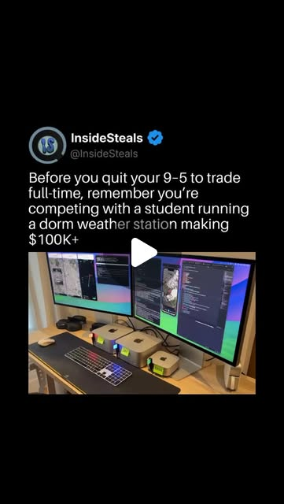
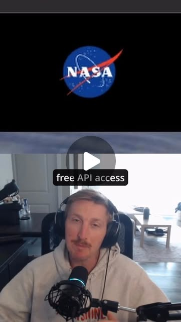
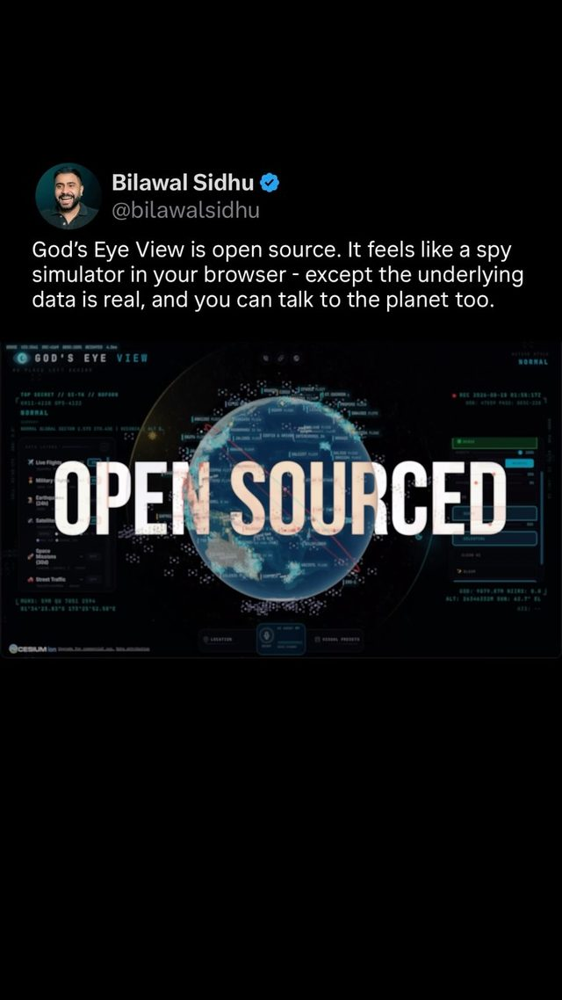
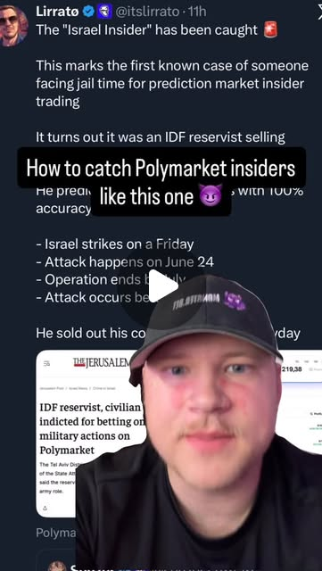
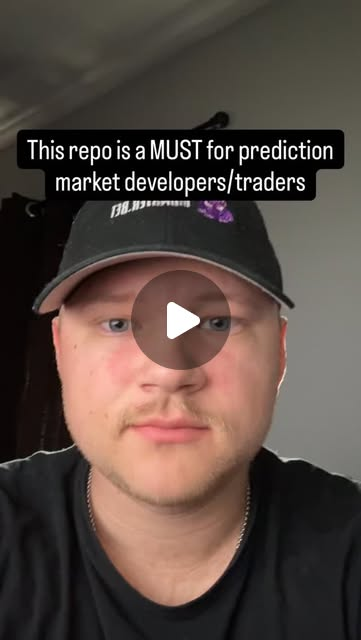
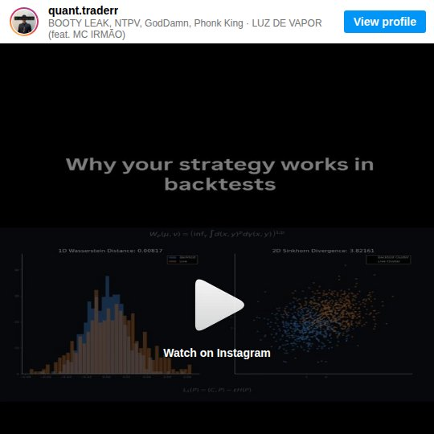

Own the Thermometer — $100 sensors as prediction-market edge
Try It — Action Sketch
Pull every open weather and event contract on Kalshi and Polymarket, and have Claude extract the settlement source and timing rule from each contract's rules into one table — which station, which report, what time. Pick the three contracts whose settlement station you can get physically near or read faster than its official report; log a Raspberry Pi sensor plus the public 5-minute station feed side by side for two weeks. Paper-trade only the final six hours before resolution, with a scheduled agent comparing your live reading to the market's implied probability and to the 99c harvest opportunities in the same window. falsifier: if the official station's public intra-hour feed already moves the price as fast as your sensor does, your sensor adds nothing — the edge was always the dorm student's local microclimate, not a method.
Connected Posts (12)







Prompt system — run this yourself
Pasteable into Claude Code, Claude, or any agent. One-shot for the whole result, step prompts when you want to steer. Every step carries its own audit; the gap audit makes the agent find and fill what it missed.
Mission. Produces a settlement-source map of every open Kalshi and Polymarket weather/event contract, a two-week side-by-side log of a Raspberry Pi sensor against the exact station each contract settles on, and a paper-only trading arm for the final six hours before resolution that tests both the sensor edge and the 99c limit-order harvest against a control. Done means a measured answer to one question: does your own read of the settlement variable arrive earlier or more accurately than the public feed the market already prices? No real money moves until the paper arm beats its control after fees.
1 · Deeper, not bigger
- What a top professional would do (that you didn't ask for): A professional weather-derivatives trader would start from the contract rules, not the sensor: which station ID, which report (NWS Daily Climate Report, a Weather Underground history page, an ASOS METAR), what rounding and unit conversion, and what time window. They would then measure the latency chain of that exact source, from sensor sampling to METAR issuance to the climate report to the market price move, and only buy hardware if a gap exists in that chain. They would treat the 99c harvest as a short-volatility position and compute the tail: one wrong 99c fill erases about 99 winning ones.
- Rawest material to start from: The rules text of each contract (Polymarket market description via the Gamma API at gamma-api.polymarket.com/markets, Kalshi market rules via the trade API v2 /markets endpoint and the contract terms). The settlement source itself: ASOS one-minute and five-minute data and raw METARs from the Iowa Environmental Mesonet ASOS archive and aviationweather.gov, including the T-group remark (temperature in tenths of a degree C) and the 6-hour max/min groups. NWS station observations from api.weather.gov/stations/{id}/observations. The order book history from the Polymarket CLOB API and websocket, and Kalshi orderbook snapshots. NASA EONET v3 events at eonet.gsfc.nasa.gov/api/v3/events for event contracts.
- Methods and tools: Python with httpx and websockets for API pulls; pandas and parquet for logs; a BME280 or SHT45 on a Raspberry Pi over I2C inside a ventilated radiation shield at 1.5-2 m; chrony to keep the Pi clock within 50 ms; a latency ledger that timestamps when each source first shows a value. Evaluation: lead-lag cross-correlation between sensor, METAR and price; Brier score and log loss of your probability against the market-implied probability; Wasserstein distance (scipy.stats.wasserstein_distance) between the sensor-minus-station residual in week 1 and week 2 to catch drift; expected value per 99c fill net of fees with a bootstrap confidence interval.
- What proves it right: The settlement itself: the official value published by the source named in the rules, compared to your sensor's prediction of it, logged before the market resolved. A control arm that trades the same windows using only public METAR data, so any edge is attributable to the sensor. The venue's own resolution history for 99c contracts that resolved against the favorite, which gives the real tail frequency.
Rewritten prompt — ask for exactly that:
You are a weather-derivatives analyst building a paper-only study. Do not place real orders. Step 1: pull every open weather and natural-event contract from the Polymarket Gamma API and the Kalshi trade API v2. For each, extract from the rules text: the settlement source (station ID, report name, URL), the variable (daily high, precipitation, event occurrence), unit and rounding rule, the observation window, and the resolution time. Output one parquet table and flag any contract whose rules are ambiguous. Step 2: for the three contracts whose station I can physically get near, build the latency chain: Iowa Environmental Mesonet ASOS one-minute data, METAR T-group and 6-hour max groups, the NWS Daily Climate Report, and the first order-book move. Record the timestamp each source first shows the final value. Step 3: specify a Raspberry Pi logger (SHT45 in a ventilated shield, chrony-synced clock) and a two-week comparison against the station feed. Step 4: define a paper arm for the final six hours before resolution with a control arm that uses public METAR only, max paper notional of 50 USD per contract and a 200 USD paper daily loss stop, plus a separate 99c harvest ledger with fees and tail losses. Step 5: report Brier score, lead time in minutes, and net expected value per trade with bootstrap intervals for both arms. State plainly if the sensor adds nothing over the public feed. Confirm venue legality for my jurisdiction before any step that touches an account.
2 · One-shot prompt
ROLE AND STANCE You are a quantitative analyst specializing in event and weather derivatives. Your job is to find out whether a cheap local sensor gives an earlier or more accurate read of a contract's settlement variable than the public data the market already prices. Source claims to test, not trust: a profile says a student made 100K+ USD on Polymarket weather contracts from a dorm weather station, and another says a trader harvests outcomes at 99c with 75 automated trades per hour. CONTEXT - Venues: Polymarket (Gamma API for market metadata, CLOB API and websocket for order books) and Kalshi (trade API v2, weather markets settling on NWS reports). Check legality for the user's jurisdiction first; Kalshi is US-regulated and Polymarket access varies. - Settlement sources: ASOS stations, METAR reports (aviationweather.gov, Iowa Environmental Mesonet archive), NWS Daily Climate Report, api.weather.gov observations, Weather Underground station history pages where named in rules. Event contracts: NASA EONET v3 (no API key). - Hardware: Raspberry Pi with an SHT45 or BME280 in a ventilated radiation shield, chrony time sync. - Drift check from the source set: Wasserstein distance between backtest and live distributions. - Insider-detection tools (Polymarket websocket forensics, QuiverQuant) are used ONLY to recognize price moves driven by information you lack. Never trade on non-public information about people. HARD CONSTRAINTS 1. Paper only. No real order, no wallet signing, no API key with trade permission until the oracle gate below passes and the user explicitly approves. 2. Paper caps: 50 USD notional per contract, 200 USD paper loss per day stops the arm for that day, 1,000 USD total paper drawdown halts the study for review. 3. Every trading arm has a control arm trading the same windows on public METAR data only. 4. Fees and spread are charged on every paper fill at the venue's published rate. 5. Never promise or project returns. Report measured numbers with intervals. DELIVERABLES IN ORDER 1. settlement_map.parquet: every open weather/event contract with station ID, report, variable, unit, rounding rule, window, resolution time, rules URL, and an ambiguity flag. 2. latency_chain.md: for the three chosen contracts, the timestamps at which sensor, ASOS one-minute, METAR T-group, 6-hour max group, climate report, and first order-book move each reflected the final value, over at least 10 resolved contracts. 3. sensor_spec.md and logger.py: wiring, siting, chrony config, one-minute CSV log, systemd unit. 4. paper_engine.py: final-six-hours watcher comparing sensor-implied probability to market-implied probability, with the control arm and the 99c harvest ledger, writing fills to paper_fills.parquet. 5. results.md: Brier score and log loss per arm, lead time distribution, net expected value per trade with bootstrap 95% intervals, 99c tail analysis (break-even win rate after fees and observed loss frequency), Wasserstein distance of the sensor residual week 1 vs week 2. BUILT-IN GAP ANALYSIS Before finishing, write a GAPS section listing: contracts whose rules you could not parse; stations with no public one-minute data; any period where the Pi clock drifted more than 1 second; resolutions you could not match to an official value; any claim from the source posts you could not test. Fill every gap you can now (for example, pull the IEM archive instead of the live feed) and note what changed. SELF-QUESTIONS (answer each in results.md) - Does the rounding or C-to-F conversion of the settlement report change the winning bucket for readings near a boundary, and did I model it? - Does the public METAR T-group already give the market the same information my sensor does, and how many minutes earlier? - How many 99c fills would one loss erase after fees, and how often did 99c favorites lose in the venue's resolution history? - Is the falsifier triggered: does the public intra-hour feed move price as fast as my sensor? STOP CONDITIONS Stop and report if: venue access is not legal for the user; fewer than 10 contracts resolve during the study; the paper drawdown cap trips; or the sensor leads the public feed by under 5 minutes on median, which means no exploitable latency edge. ORACLE GATE FOR ANY REAL MONEY Real money is only discussable if, over at least 30 resolved paper contracts, the sensor arm beats the control arm on Brier score and on net expected value with the bootstrap 95% interval excluding zero. RETURN FORMAT A short summary (verdict on sensor edge, verdict on 99c harvest, falsifier status), the file list above with paths, the GAPS section, and the self-question answers.
3 · Step-by-step prompts
Step 1 — Ground truth: settlement-source map
Goal: Know exactly which number, from which station and report, each open contract settles on.
Pull every open weather and natural-event contract from the Polymarket Gamma API (gamma-api.polymarket.com/markets, filter by tag or keyword: temperature, rain, snow, hurricane, earthquake, wildfire) and from the Kalshi trade API v2 /markets endpoint (weather series such as daily high temperature by city). For each contract, read the full rules text and extract into settlement_map.parquet: venue, market ID, question, settlement source name, station ID (ICAO such as KNYC or KLGA where given), report type (NWS Daily Climate Report, METAR, Weather Underground history page, NASA EONET, other), variable, unit, rounding rule, observation window with timezone, resolution time, rules URL, and ambiguous (bool) with a one-line reason. Do not infer a station from the city name; if the rules do not name one, mark it ambiguous. Count contracts per settlement source. Before any of this, write one paragraph on whether the user's jurisdiction permits access to each venue and stop if it does not.
Expect: A parquet table with one row per open contract (typically dozens to a few hundred), every column filled or flagged, plus a count table by settlement source and a legality paragraph.
Audit before moving on: Pick 10 random rows and re-read the rules text by hand: station ID, rounding and window must match exactly. Any mismatch is a fail: fix the extractor and re-run on all rows. Fail also if more than 20% of rows are ambiguous without a reason.
Step 2 — Latency chain of the public sources
Goal: Measure when each public source first reveals the settlement value, before buying any hardware.
From settlement_map.parquet choose the three liquid contract series whose station you could get physically near. For each, pull 30 days of history: ASOS one-minute data from the Iowa Environmental Mesonet archive, raw METARs including the remarks T-group (temperature in tenths C) and 6-hour max/min groups, api.weather.gov observations, and the NWS Daily Climate Report issue time. Pull the matching order-book or trade history from the Polymarket CLOB API or Kalshi. For each resolved contract day, build a latency ledger: the timestamp when each source first showed a value that locked the final outcome bucket, and the timestamp when the market's best bid for the winning side first crossed 90c. Compute, per source, the median and 90th-percentile lead over that price move. Model the conversion and rounding the rules specify and flag days where conversion alone changed the bucket.
Expect: latency_chain.md with a table per series: source, median lead in minutes, p90 lead, plus a list of rounding-sensitive days and the raw ledger in parquet.
Audit before moving on: Recompute one day by hand from raw METAR text and confirm the ledger timestamp. If the market moves before every public source, assume a source you have not found and search the rules again before continuing.
Step 3 — Build and site the sensor logger
Goal: Log a sensor reading comparable to the station's at one-minute cadence with a trustworthy clock.
Write sensor_spec.md and logger.py for a Raspberry Pi with an SHT45 (or BME280) on I2C. Specify a ventilated radiation shield at 1.5 to 2 m, away from walls and pavement, mirroring ASOS siting as far as possible. Configure chrony against public NTP servers and log the clock offset each minute. logger.py reads the sensor every 10 s, writes one-minute mean, min, max and clock offset to a daily CSV, and pulls the station's latest observation from api.weather.gov alongside it. Ship a systemd service and timer, log rotation, and a health check that writes a heartbeat file. Then run for 14 days and produce residual.parquet: sensor minus station per minute, with hour-of-day and cloud cover from METAR. Note in sensor_spec.md the parts cost, power draw, and how to reproduce the install on a second Pi.
Expect: Wiring diagram in text, logger.py, chrony.conf snippet, systemd unit, and after 14 days a residual table with mean, standard deviation and hour-of-day bias.
Audit before moving on: Fail if clock offset ever exceeds 1 s, if more than 2% of minutes are missing, or if the residual standard deviation exceeds 1.5 C, which means siting is wrong; move the sensor and restart the 14 days.
Step 4 — Sensor-implied probability model
Goal: Turn live sensor plus public data into a calibrated probability for each outcome bucket.
Using residual.parquet and the latency ledger, build a model that, at any minute in the final six hours, outputs the probability of each settlement bucket. Inputs: current sensor reading corrected by the hour-of-day residual, running daily max so far, latest METAR T-group, forecast high from the NWS point forecast, minutes to window close. Use an empirical distribution of remaining rise given time of day and current gap, fit on the first 10 days, tested on the rest. Build an identical model that drops the sensor input and uses public data only; this is the control. Report Brier score and log loss for both on the held-out days, plus reliability diagrams. Save both fitted models with their training-day list so step 5 can load them unchanged.
Expect: model.py, a held-out comparison table of sensor model versus public-only model, and reliability plots.
Audit before moving on: Fail if the sensor model is fit and evaluated on the same days, or if any feature uses data timestamped after the prediction minute. Check with a shift test: shuffle sensor timestamps by 60 minutes and confirm skill drops.
Step 5 — Paper engine with control and 99c ledger
Goal: Paper-trade the final six hours on both arms and the 99c harvest under hard caps.
Write paper_engine.py, scheduled every minute in the final six hours before each chosen contract resolves. It reads the order book over websocket, computes market-implied probability from the mid, and the sensor-arm and control-arm probabilities from model.py. A paper buy fires only when model probability minus ask exceeds fees plus 3 percentage points. Caps: 50 USD paper notional per contract, 200 USD paper daily loss stop, 1,000 USD total paper drawdown halts everything. Separately, log every outcome trading at 99c or above in the same window, simulate a resting limit buy at 99c with queue position assumed last, and record its paper result after resolution. Every fill pays the venue's published fee and the spread. Write to paper_fills.parquet. The code must contain no order-placing call; assert that no trading credential is loaded.
Expect: A running engine, a fills table with arm, contract, time, price, size, fee, outcome, P&L, and a daily summary.
Audit before moving on: Grep the code for any order-submission endpoint and fail if found. Replay one resolved day offline and confirm fills reproduce. Fail if a fill uses a price better than the best ask at that timestamp.
Step 6 — Validate against oracles and write the gap report
Goal: Decide whether the sensor and the 99c harvest have edge, with evidence.
After at least 30 resolved paper contracts, compute for each arm: Brier score, log loss, number of trades, net P&L, net expected value per trade with a bootstrap 95% interval (10,000 resamples by contract day). Compare sensor arm to control arm. For the 99c ledger, compute break-even win rate after fees, observed loss count, and the expected value per fill with interval; pull the venue's history of 99c favorites that lost to estimate tail frequency beyond your sample. Compute the Wasserstein distance between week-1 and final-week sensor residuals and between paper-period and backtest-period price distributions. Answer the falsifier directly: does the public intra-hour feed move price as fast as the sensor? Write results.md with a GAPS section: every claim from the source posts and from your own steps, marked verified, unverified or false with the evidence file. State the real-money gate result in one line; never recommend live trading if the interval includes zero.
Expect: results.md with per-arm tables, falsifier verdict, gap list and gate line.
Audit before moving on: Have the numbers recomputed from paper_fills.parquet by a fresh script and compare to two decimal places. Fail if any arm lacks a control comparison or if results quote returns without intervals.
4 · Gap analysis and audit
You are auditing a finished paper study of sensor-settled prediction-market contracts. Open settlement_map.parquet, latency_chain.md, residual.parquet, paper_fills.parquet and results.md. List every factual claim in results.md, one per line. For each, mark verified (cite the file and row or computation that proves it), unverified (say what data would prove it), or false. Specifically check: that each traded contract's station and rounding rule match the rules text; that no feature in the model uses data after the prediction minute; that fees and spread were charged on every fill; that the control arm traded the same windows; that the 99c tail estimate uses more than your own sample; that the Pi clock stayed within 1 s; and that the source claims (100K+ USD from a dorm station, 75 trades per hour at 99c) are labeled unverified anecdotes, not evidence. Then list missing pieces: contracts never resolved, stations without one-minute data, days with logger outages. Rank problems by verdict impact. Fix the top three now by re-running the relevant computation, and report the before and after numbers. End with what you could not fix and why, and restate the real-money gate result.
Questions the agent must ask itself before it says done:
- Which exact report and station does each contract settle on, and did I read it from the rules or guess it from the city?
- Does C-to-F conversion or whole-degree rounding in the settlement report flip buckets near a boundary, and did my model include it?
- Is my sensor measuring the station's air or my rooftop's, and how big is the hour-of-day bias?
- Does the METAR T-group or 6-hour max group already reveal the final high before my sensor gives any extra information?
- How many 99c wins does one 99c loss erase after fees, and how often do 99c favorites lose in venue history?
- Could a price move I attribute to my edge be someone else's information that I should not be trading against?
- Is the venue legal for this user, and did I keep every trading credential out of the code?
- Did my sensor residual drift between week 1 and week 2, as measured by Wasserstein distance?
5 · What proves it right
- The official settlement value published by the source named in the rules (for example the NWS Daily Climate Report) versus my logged pre-resolution prediction for every traded contract.
- The public-METAR-only control arm trading identical windows: the sensor arm must beat it on Brier score and net expected value with a bootstrap 95% interval excluding zero over 30 or more contracts.
- The venue's own resolution history for outcomes priced at 99c or above, giving the observed frequency of favorites losing.
- A second person re-running latency_chain from the raw IEM and order-book files and reproducing median lead times within 1 minute.
6 · Failure modes
- Wrong station: the contract settles on Central Park but the sensor is compared to LaGuardia. Tell: residual looks fine but predictions miss the settled value. Fix: re-extract the station from rules text and re-run step 2.
- Microclimate bias: rooftop sensor reads 2 C hot in afternoon sun. Tell: residual mean depends strongly on hour and cloud cover. Fix: ventilated shield, re-site, hour-of-day correction.
- No latency edge: the market reaches 95c from the METAR T-group before the sensor adds anything. Tell: median sensor lead under 5 minutes. Fix: accept the falsifier and stop; do not tune until it looks good.
- 99c tail blindness: weeks of 1c wins then one loss erases them. Tell: zero losses in sample but break-even win rate above 99%. Fix: use venue-wide history for tail frequency and report expected value with that rate.
- Fantasy fills: paper engine fills at mid or at prices not on the book. Tell: sensor arm P&L far above what visible depth allows. Fix: fill at best ask, size capped by displayed depth.
7 · Agent direction (unattended runs)
Start with the APIs, not hardware: Polymarket Gamma and CLOB, Kalshi trade API v2, Iowa Environmental Mesonet ASOS archive, api.weather.gov. Cache every raw response to data/raw/ as dated JSON or parquet so steps can be re-run offline. Spawn one sub-agent per venue for step 1 extraction and a separate one for the latency ledger in step 2; review their tables by re-reading 10 rules texts yourself. Stop and ask the user before anything involving accounts, credentials, or jurisdiction questions you cannot resolve from public venue terms, and before buying hardware if step 2 already shows no latency gap. Never load a key with trade permission; the engine must fail closed if one is present. Long waits are scheduled jobs: write the timers, return, resume from logs. Return files: settlement_map.parquet, latency_chain.md, sensor_spec.md, logger.py, model.py, paper_engine.py, paper_fills.parquet, results.md, all under one study folder, with results.md as the entry point.
Prompt system updated 2026-10-22 · all prompt systems · JSON